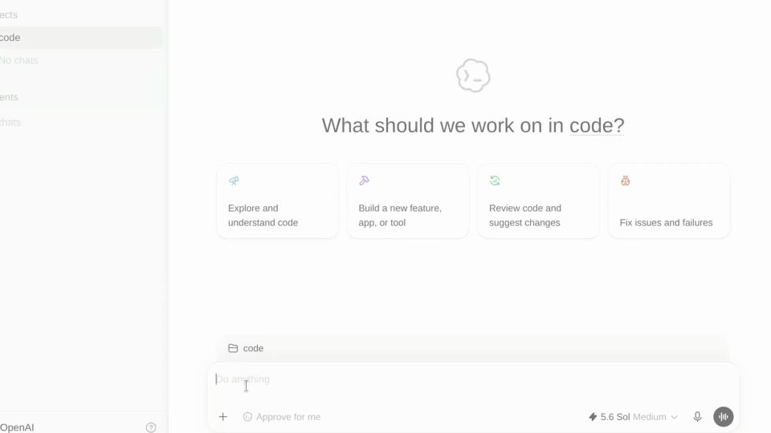
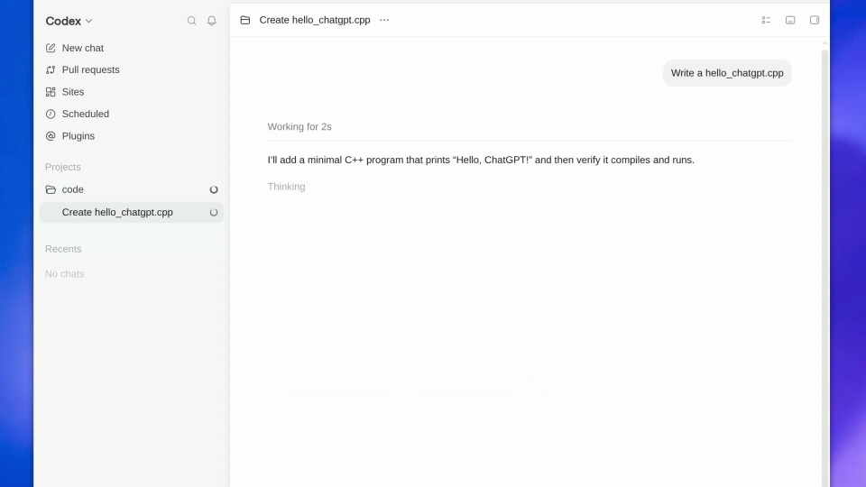
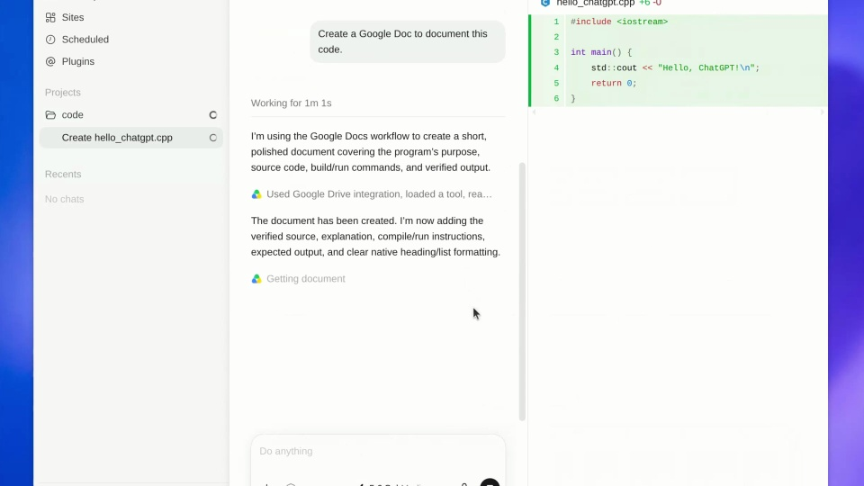
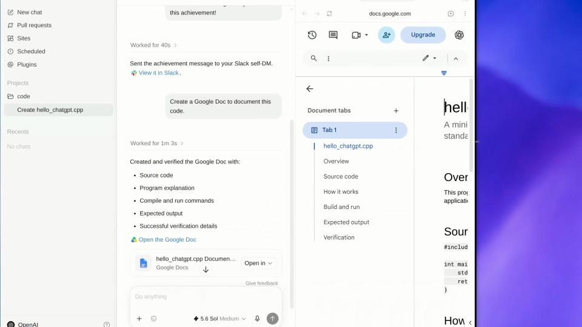
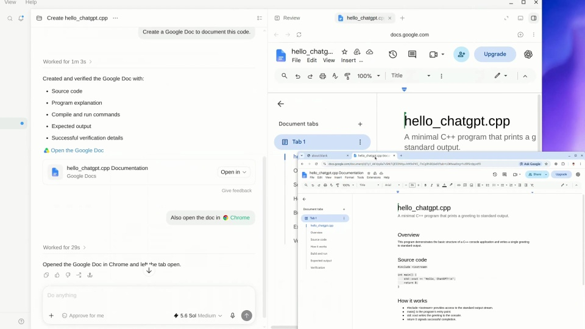

OpenAI / V304
ChatGPT Desktop — now in preview on Linux
沿用一个代码任务，把它整理成可分享的文档，再打开到日常使用的编辑器中。
构图与编排 可播放 · 可替换内容
整体编排规则示例
查看 HTML 源码
<!doctype html><html lang="zh-CN"><meta charset="utf-8"><meta name="viewport" content="width=device-width,initial-scale=1"><title>ChatGPT Desktop — now in preview on Linux · sequence</title><style>html,body{margin:0;width:100%;height:100%;overflow:hidden;background:#fbfbfb}canvas{display:block;width:100%;height:100%;object-fit:contain}</style><body data-mode="sequence"><canvas width="1000" height="600"></canvas><script src="data.js"></script><script src="common.js"></script><script src="scene.js"></script><script src="bridge.js"></script></body></html>画面元素会话侧栏输入代码差异回复文档链接文档窗口
MOTION LANGUAGE
动作与构图
局部动作 · 构图规则
01
保留任务的名字和材料
白色工作台上固定会话侧栏，代码区使用等宽字，蓝紫色只点亮当前操作。代码文件名、文档标题和正文内容围绕同一任务。
02
从代码视图切到文档请求
从代码视图切到文档请求规则示例
查看 HTML 源码
<!doctype html><html lang="zh-CN"><meta charset="utf-8"><meta name="viewport" content="width=device-width,initial-scale=1"><title>ChatGPT Desktop — now in preview on Linux · sequence</title><style>html,body{margin:0;width:100%;height:100%;overflow:hidden;background:#fbfbfb}canvas{display:block;width:100%;height:100%;object-fit:contain}</style><body data-mode="clip" data-start="6" data-end="28"><canvas width="1000" height="600"></canvas><script src="data.js"></script><script src="common.js"></script><script src="scene.js"></script><script src="bridge.js"></script></body></html>代码结果稳定后，再提出“整理成文档”的请求。新文档在旁边展开，让观众同时看到素材和成果的关系。
03
在目标编辑器里结束
打开文档后保留编辑器工具栏，呈现标题、代码段和说明正文。成品能被继续编辑，是这一段的落点。
04
替换成另一种知识成果
可换成调研、会议纪要或设计说明。保留素材、整理请求、目标文件三者的对应；文档内容变长时展示有代表性的开头和一个重点段落。
SEQUENCE
段落与节奏
点击段落，定位到上方编排示意。





画面参考 · 离散静帧
KEEP THE RELATIONSHIPS
制作其他主题
- 可迁移成设计稿→说明文档；保留生成后打开核验。
- 内容可替换，来源与交付文件应对应。
制作约束
会话侧栏 / 输入 / 代码差异 / 回复 / 文档链接 / 文档窗口
- 先展示代码任务，再要求将代码整理成文档；打开结果验证跨应用交付。
- 镜头在会话、代码和文档三个区域切换，始终维持同一任务上下文。